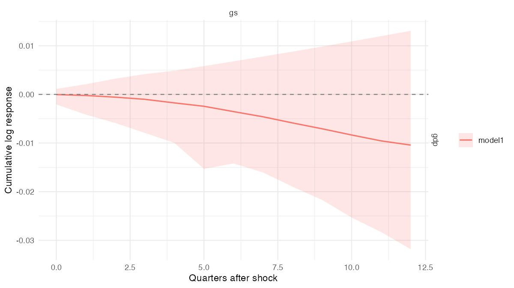
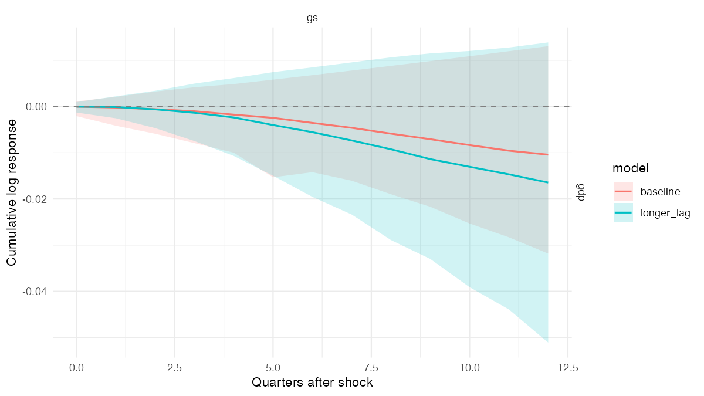
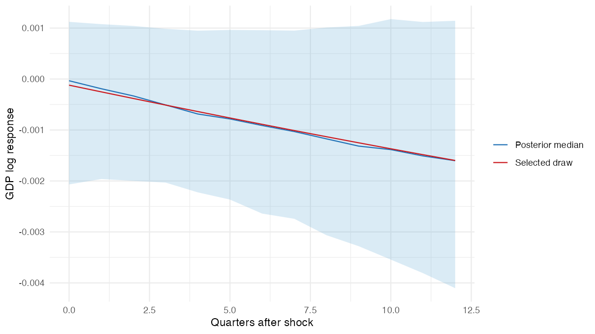

This article follows one fiscal analysis from posterior draws to an exported comparison table. It assumes familiarity with R and structural VARs. The demo models use bsvars default identification; economic shock interpretations must follow the restrictions used in your own model.
Load the demonstration models
library(bsvarPost)
post <- readRDS(system.file("extdata", "fiscal_post_bsvar.rds",
package = "bsvarPost", mustWork = TRUE))
post_alt <- readRDS(system.file("extdata", "fiscal_post_bsvar_alt.rds",
package = "bsvarPost", mustWork = TRUE))
metadata <- read.csv(system.file("extdata", "demo-metadata.csv",
package = "bsvarPost", mustWork = TRUE))
metadata[1:2, c("file", "p", "seed", "draws", "sample_start", "sample_end")]
#> file p seed draws sample_start sample_end
#> 1 fiscal_post_bsvar.rds 1 123 200 1948 2026
#> 2 fiscal_post_bsvar_alt.rds 3 456 200 1948 2026The baseline has one lag and the alternative three. Both contain 200 retained draws, a small demonstration sample rather than evidence of sampling adequacy. The installed metadata records estimation software versions, transformations, sample ranges and checksums. The frozen input data travel with these fits. Results obtained by re-estimating may differ across software versions.
GDP’s response to government spending
responses <- tidy_irf(post, horizon = 12, probability = 0.90)
gdp_irf <- subset(responses, variable == "gdp" & shock == "gs")
gdp_irf[gdp_irf$horizon %in% c(0, 4, 8, 12),
c("horizon", "median", "lower", "upper")]
#> # A tibble: 4 × 4
#> horizon median lower upper
#> <dbl> <dbl> <dbl> <dbl>
#> 1 0 -0.0000337 -0.00207 0.00112
#> 2 4 -0.000686 -0.00222 0.000949
#> 3 8 -0.00117 -0.00306 0.00101
#> 4 12 -0.00160 -0.00410 0.00114Horizon zero is impact; horizon 12 is twelve quarters later, giving thirteen reported horizons. Bounds are pointwise 90% equal-tailed credible intervals, not a simultaneous band over the entire path. The response is in the data’s log units under the fitted structural-shock normalization. It is not implicitly normalized to a one-dollar or one-percent spending increase.
Cumulative responses and units
For draw , the cumulative response through horizon is
Summation happens within each draw, before posterior summaries are computed. The cumulative posterior median need not equal the sum of marginal medians.
cumulative <- tidy_cdm(post, horizon = 12, probability = 0.90)
gdp_cdm <- subset(cumulative, variable == "gdp" & shock == "gs")
gdp_cdm[gdp_cdm$horizon %in% c(0, 4, 8, 12),
c("horizon", "median", "lower", "upper", "scale_by", "scale_factor")]
#> # A tibble: 4 × 6
#> horizon median lower upper scale_by scale_factor
#> <dbl> <dbl> <dbl> <dbl> <chr> <dbl>
#> 1 0 -0.0000337 -0.00207 0.00112 none 1
#> 2 4 -0.00175 -0.00998 0.00487 none 1
#> 3 8 -0.00587 -0.0190 0.00880 none 1
#> 4 12 -0.0104 -0.0318 0.0131 none 1These inputs are log real per capita levels, without multiplication
by 100. For example, an IRF of 0.001 log units is
approximately a 0.1% change (exactly 100 * (exp(0.001) - 1)
percent). For one hypothetical draw with responses 0.001,
0.002, and 0.001, the cumulative response at
horizon 2 is 0.004 log units summed across three quarters.
This is not the endpoint percentage change or a dollar-per-dollar fiscal
multiplier.
example_irf <- c(0.001, 0.002, 0.001)
c(impact_percent = 100 * expm1(example_irf[1]),
cumulative_log_response = sum(example_irf))
#> impact_percent cumulative_log_response
#> 0.10005 0.00400
scaled <- tidy_cdm(post, horizon = 12, probability = 0.90,
scale_by = "shock_sd", scale_var = "gs")
subset(scaled, variable == "gdp" & shock == "gs" & horizon == 12,
select = c(median, scale_by, scale_var, scale_factor))
#> # A tibble: 1 × 4
#> median scale_by scale_var scale_factor
#> <dbl> <chr> <chr> <dbl>
#> 1 -0.0589 shock_sd gs 0.177shock_sd divides each cumulative response by the
reported sample standard deviation of the selected observed variable
(gs here). It does not set the shock’s impact spending
response to one. A fiscal multiplier requires the output and spending
responses expressed in compatible levels and their appropriate
cumulative ratio. The package does not infer that conversion from these
log series. See ?cdm and ?posterior_provenance
in R.
figure <- ggplot2::autoplot(gdp_cdm) +
ggplot2::labs(x = "Quarters after shock", y = "Cumulative log response")
GDP response to the gs shock, summed from impact through each horizon. Line: posterior median; ribbon: pointwise 90% equal-tailed interval. Original log units; no additional scaling.
Compare lag specifications
comparison <- compare_cdm(baseline = post, longer_lag = post_alt,
horizon = 12, probability = 0.90)
comparison_gdp <- subset(comparison, variable == "gdp" & shock == "gs")
comparison_gdp[comparison_gdp$horizon %in% c(0, 4, 8, 12),
c("model", "horizon", "median", "lower", "upper")]
#> # A tibble: 8 × 5
#> model horizon median lower upper
#> <chr> <dbl> <dbl> <dbl> <dbl>
#> 1 baseline 0 -0.0000337 -0.00207 0.00112
#> 2 baseline 4 -0.00175 -0.00998 0.00487
#> 3 baseline 8 -0.00587 -0.0190 0.00880
#> 4 baseline 12 -0.0104 -0.0318 0.0131
#> 5 longer_lag 0 -0.0000230 -0.00129 0.000971
#> 6 longer_lag 4 -0.00236 -0.0107 0.00617
#> 7 longer_lag 8 -0.00925 -0.0289 0.0106
#> 8 longer_lag 12 -0.0165 -0.0511 0.0139The names identify models in tables and legends. This is a sensitivity comparison, not a model-selection criterion or a posterior probability that one model’s response exceeds the other’s.
figure <- ggplot2::autoplot(comparison_gdp) +
ggplot2::labs(x = "Quarters after shock", y = "Cumulative log response")
GDP cumulative response to gs: baseline p=1 and longer_lag p=3. Lines and ribbons show medians and pointwise 90% equal-tailed intervals in original log units, without additional scaling.
Select one representative draw
A path of marginal medians need not correspond to a single retained structural model. Select one draw closest to the GDP response’s median target over 0–12:
representative <- median_target_irf(post, horizon = 12, probability = 0.90,
variables = "gdp", shocks = "gs", horizons = 0:12)
representative$draw_index
#> [1] 28
representative_path <- subset(summary(representative),
variable == "gdp" & shock == "gs")
representative_path[representative_path$horizon %in% c(0, 4, 8, 12),
c("horizon", "median", "draw_index", "selected_draw_id", "method")]
#> # A tibble: 4 × 5
#> horizon median draw_index selected_draw_id method
#> <dbl> <dbl> <int> <chr> <chr>
#> 1 0 -0.000121 28 28 median_target
#> 2 4 -0.000638 28 28 median_target
#> 3 8 -0.00113 28 28 median_target
#> 4 12 -0.00160 28 28 median_targetHere median is the selected draw’s response, not the
posterior median. The selected draw provides a coherent model, not an
uncertainty interval. The representative object retains the full array,
so explicitly filter the plot to match the selected target:
figure <- ggplot2::ggplot(gdp_irf, ggplot2::aes(horizon, median)) +
ggplot2::geom_ribbon(ggplot2::aes(ymin = lower, ymax = upper),
fill = "#6baed6", alpha = 0.25) +
ggplot2::geom_line(ggplot2::aes(colour = "Posterior median")) +
ggplot2::geom_line(data = representative_path,
ggplot2::aes(colour = "Selected draw")) +
ggplot2::scale_colour_manual(values = c("Posterior median" = "#2171b5",
"Selected draw" = "#cb181d")) +
ggplot2::labs(x = "Quarters after shock", y = "GDP log response", colour = NULL) +
ggplot2::theme_minimal()
GDP IRF to gs in original log units. Red: one draw selected over this response at horizons 0–12. Blue: posterior median; ribbon: pointwise 90% equal-tailed interval. No additional scaling.
Export results with provenance
as_kable(comparison_gdp, preset = "compact", digits = 3,
caption = "GDP cumulative response to government spending")| Model | Variable | Shock | Horizon | Mean | Median | Lower | Upper |
|---|---|---|---|---|---|---|---|
| baseline | gdp | gs | 0 | -0.001 | 0.000 | -0.002 | 0.001 |
| baseline | gdp | gs | 1 | -0.001 | 0.000 | -0.004 | 0.002 |
| baseline | gdp | gs | 2 | -0.002 | -0.001 | -0.006 | 0.003 |
| baseline | gdp | gs | 3 | -0.003 | -0.001 | -0.008 | 0.004 |
| baseline | gdp | gs | 4 | -0.004 | -0.002 | -0.010 | 0.005 |
| baseline | gdp | gs | 5 | -0.005 | -0.002 | -0.015 | 0.006 |
| baseline | gdp | gs | 6 | -0.008 | -0.004 | -0.014 | 0.007 |
| baseline | gdp | gs | 7 | -0.011 | -0.005 | -0.016 | 0.008 |
| baseline | gdp | gs | 8 | -0.016 | -0.006 | -0.019 | 0.009 |
| baseline | gdp | gs | 9 | -0.022 | -0.007 | -0.022 | 0.010 |
| baseline | gdp | gs | 10 | -0.032 | -0.008 | -0.025 | 0.011 |
| baseline | gdp | gs | 11 | -0.045 | -0.010 | -0.028 | 0.012 |
| baseline | gdp | gs | 12 | -0.064 | -0.010 | -0.032 | 0.013 |
| longer_lag | gdp | gs | 0 | -0.001 | 0.000 | -0.001 | 0.001 |
| longer_lag | gdp | gs | 1 | -0.003 | 0.000 | -0.003 | 0.002 |
| longer_lag | gdp | gs | 2 | -0.006 | -0.001 | -0.005 | 0.003 |
| longer_lag | gdp | gs | 3 | -0.010 | -0.001 | -0.007 | 0.005 |
| longer_lag | gdp | gs | 4 | -0.015 | -0.002 | -0.011 | 0.006 |
| longer_lag | gdp | gs | 5 | -0.023 | -0.004 | -0.015 | 0.007 |
| longer_lag | gdp | gs | 6 | -0.038 | -0.006 | -0.020 | 0.008 |
| longer_lag | gdp | gs | 7 | -0.072 | -0.007 | -0.023 | 0.010 |
| longer_lag | gdp | gs | 8 | -0.160 | -0.009 | -0.029 | 0.011 |
| longer_lag | gdp | gs | 9 | -0.398 | -0.011 | -0.033 | 0.012 |
| longer_lag | gdp | gs | 10 | -1.052 | -0.013 | -0.039 | 0.012 |
| longer_lag | gdp | gs | 11 | -2.864 | -0.015 | -0.044 | 0.013 |
| longer_lag | gdp | gs | 12 | -7.897 | -0.016 | -0.051 | 0.014 |
output <- tempfile(fileext = ".csv")
write_bsvar_csv(comparison_gdp, file = output)
exported <- read.csv(output, check.names = FALSE)
exported[1:2, c("Model", "Horizon", "Median", "Interval probability",
"Interval method", "Scaling", "Source package", "Source version", "Draw count")]
#> Model Horizon Median Interval probability Interval method Scaling
#> 1 baseline 0 -3.370222e-05 0.9 equal_tailed none
#> 2 baseline 1 -2.287561e-04 0.9 equal_tailed none
#> Source package Source version Draw count
#> 1 bsvars 4 200
#> 2 bsvars 4 200Replace output with your chosen path to keep the file.
The default export retains provenance with readable column labels; the
compact table is for presentation. source_version
identifies software used for the current calculation; estimation history
is in the demo metadata. Economic units can be unknown
because arbitrary transformations cannot be reconstructed from a
posterior object.
For scripts that require fixed column names, select a schema explicitly and use the standard CSV writer:
schema <- c("model", "variable", "shock", "horizon", "median", "lower", "upper",
"interval_probability", "interval_method", "scale_by", "scale_factor",
"source_package", "source_version", "n_draws")
machine_output <- tempfile(fileext = ".csv")
write.csv(as.data.frame(comparison_gdp)[, schema], machine_output, row.names = FALSE)Supported plotting inputs
ggplot2::autoplot() handles response summaries and
supported draw-level paths; publish_bsvar_plot() adds
publication styling for supported families. Individual timing summaries
and draw-level hypothesis or event tables do not have an automatic plot.
Summarize first or use a suitable comparison/family plot; passing
unsupported inputs raises an explicit error.
probabilities <- hypothesis_irf(post, variables = "gdp", shocks = "gs",
horizon = 0:12, relation = ">", value = 0)
probability_plot <- plot_hypothesis(probabilities)For grouped historical decompositions, consult the draw-level input recipe.
Estimate your own models
This optional recipe uses the same frozen input, seeds and 200-draw settings as the demo generator. For research, choose an appropriate model, sampling length and diagnostic strategy; 200 draws is only an illustration.
fiscal_data <- readRDS(system.file("extdata", "us_fiscal_lsuw.rds",
package = "bsvarPost", mustWork = TRUE))
set.seed(123)
spec <- bsvars::specify_bsvar$new(fiscal_data, p = 1)
post <- bsvars::estimate(spec, S = 200, thin = 1, show_progress = FALSE)
set.seed(456)
spec_alt <- bsvars::specify_bsvar$new(fiscal_data, p = 3)
post_alt <- bsvars::estimate(spec_alt, S = 200, thin = 1, show_progress = FALSE)For other posterior quantities use tidy_fevd(),
tidy_shocks(), tidy_forecast() and
tidy_hd(). Continue with inference and comparison, historical
decompositions, or sign-restricted workflows. The
reference
index and help(package = "bsvarPost") document
supported inputs.